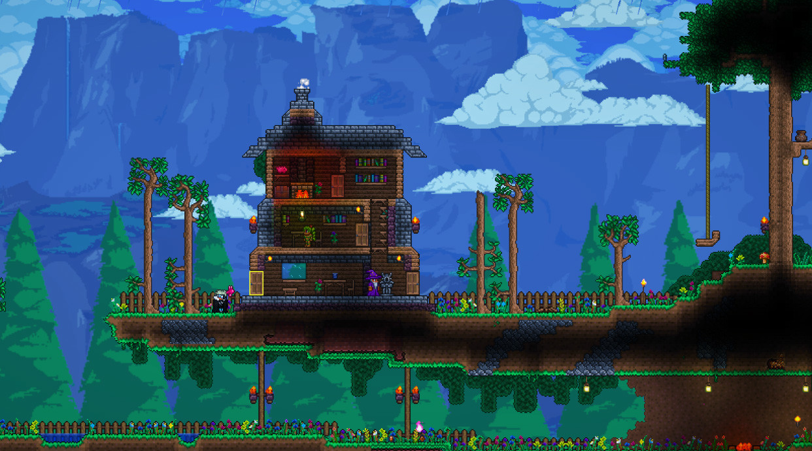
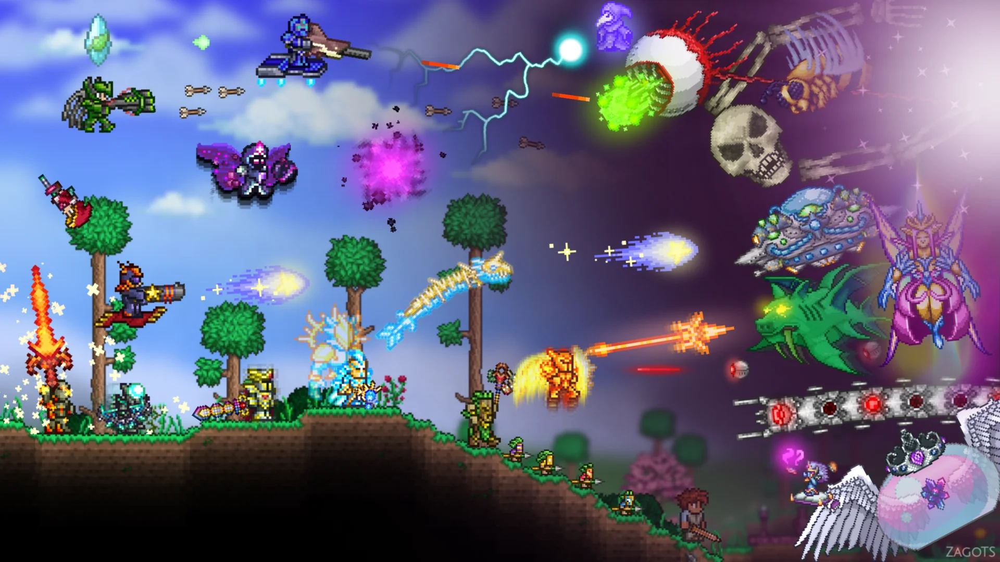

Aunque Terraria fue lanzado sin una narrativa concreta, los desarrolladores de Re-Logic lanzaron una historia oficial que conecta personajes y elementos del juego en su octavo aniversario. Sin embargo, los jugadores son libres de interpretar la historia o reconstruirla como prefieran. El Bestiario contiene fragmentos de esta tradición, ofreciendo una visión más profunda de este mundo fascinante.


